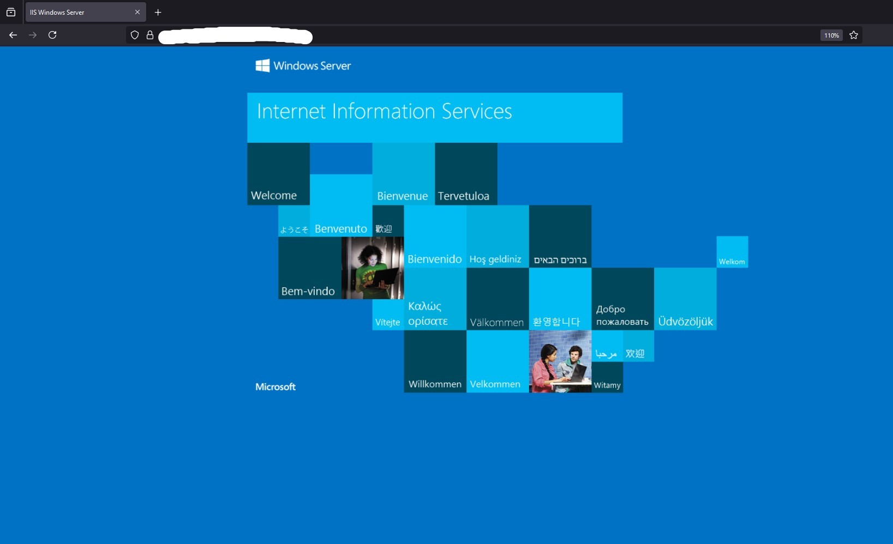
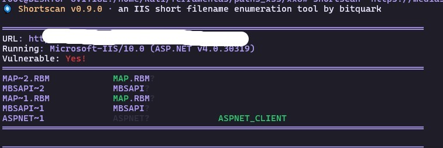
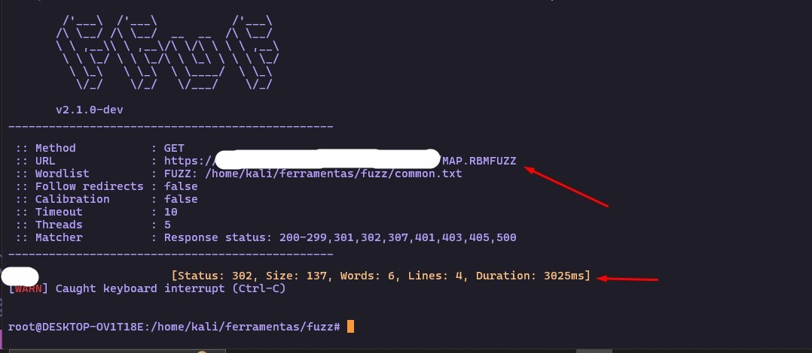
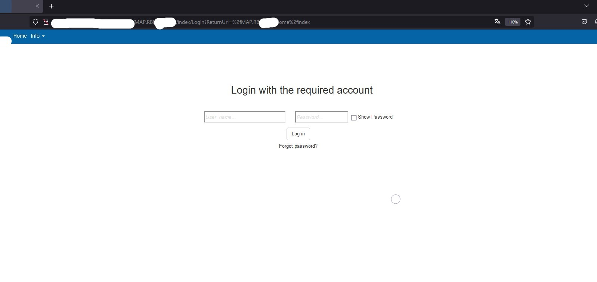
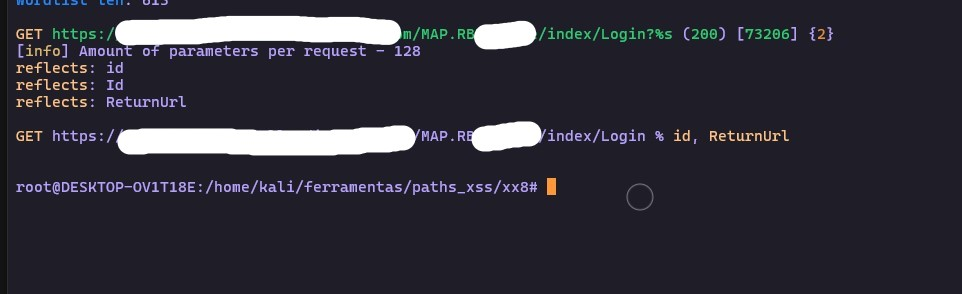
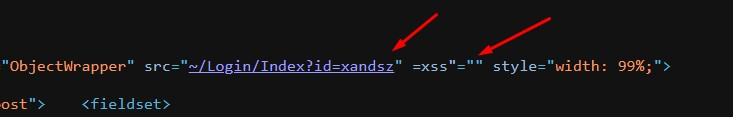
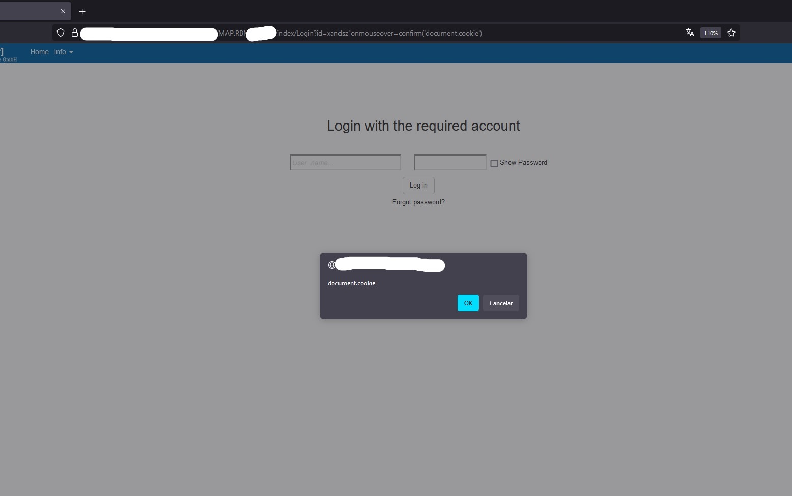
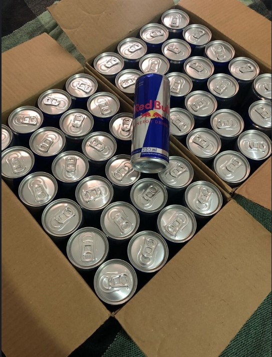

Olá hunters, vamos contar mais um caso da Redbull, diferente dos demais programas eles colocam o escopo em uma lista no GitHub.
Lista de domínios no escopo da Redbull! redbull.list.
Peguei essa lista e rodei o HTTPX para pegar todos os domínios que respondiam com status code 200.
httpx -l lista.txt --mc 200 > 200s.txt
Após verificar alguns domínios, cheguei a um domínio que tinha uma página padrão do servidor IIS.
Se você é um iniciante no Bug Bounty/Penteste, provavelmente você pularia essa página pensando que não tem nada de mais aqui! Mas você pode estar enganado!
Uma dica boa para todo Bug Hunter é quando encontrar um servidor com a página padrão do IIS, usar o Shortscan.
Shortscan é uma ferramenta projetada para determinar rapidamente quais arquivos com nomes curtos existem em um servidor web IIS. Após identificar um nome de arquivo curto, a ferramenta tenta identificar automaticamente o nome de arquivo completo.
Além dos métodos de descoberta padrão, o Shortscan também usa uma abordagem única de correspondência de checksums para tentar encontrar o nome de arquivo longo. Essa abordagem se baseia no algoritmo proprietário de checksum de prevenção de colisões de nomes curtos do Windows.
Fui para o terminal e digitei o seguinte comando:
shortscan https://site.com
Esperei um pouco e tive esse retorno:
Como você já sabe, o Shortscan procura nomes curtos, ou seja, se existir uma pasta ou arquivo no servidor com o nome "systemadmin", ele irá me trazer "syste?" na resposta do Shortscan e a sua missão é adivinhar o resto do nome dessa pasta/arquivo.
Como posso adivinhar o nome dos arquivos?
Você pode utilizar vários métodos, mas um deles que funciona bastante é usar o fuzzing para adivinhar o resto do nome do arquivo/pasta.
No meu caso, peguei uma pasta chamada "MAP.RBM?" que o Shortscan me deu. No lugar da interrogação, você faz o fuzzing, o comando que usei está abaixo:
ffuf -w lista.txt -t 5 -u https://alvo.com/MAP.RBMFUZZ -c
Outros exemplos de como você pode fazer esse fuzzing:
ffuf -w common.txt -t 5 -u https://alvo.com/MAP.RBM_FUZZ -c
ffuf -w common.txt -t 5 -u https://alvo.com/MAP.RBM%20FUZZ -c
Após fazer o fuzzing, eu me esqueci completamente que estava fazendo esse fuzzing e me distraí. Depois de muito tempo, eu voltei e me deparei com isso:
Ele me retornou um 302 com o seguinte nome > MAP.RBMadm.
Quando vou para:
http://alvo.com/MAP.RBMadm
Ele me redireciona para:
http://alvo.com/MAP.RBMadm/Home/index/Login?ReturnUrl=/MAP.RBMadm/Home/index
Aqui, eu cai em um portal de login.
Eu tentei bypass de login via SQL injection, tentei XSS no parâmetro "ReturnUrl=", tentei mudar o status da resposta de 403 para 200 OK.
Mas nada deu certo!
Como um velho e bom hunter, é essencial você procurar parâmetros ocultos na aplicação, pois neles podem ter vulnerabilidades como XSS, SQLi e outras...
Sabendo disso, corri para o x8!
x8!
A ferramenta auxilia na identificação de parâmetros ocultos que podem ser potencialmente vulneráveis ou revelar funcionalidades interessantes que podem ser perdidas por outros testadores. Sua alta precisão é alcançada por meio de comparação linha por linha de páginas, comparação de códigos de resposta e reflexões.
Corri para o terminal e digitei o comando:
x8 -u https://alvo.com/MAP.RBMadm/Home/index/Login -w arjun.txt
Recebi esse output:
Como podemos ver, existe um parâmetro "id" que é refletido na página. Se você é um hunter atento, já deve saber aonde eu quero chegar!
Corri para a minha URL e coloquei meu parâmetro id com uma payload XSS:
https://alvo.com/MAP.RBMadm/Home/index/Login?id=wwqq"><svg/onload=confirm('document.cookie')></svg>
Mas ao digitar essa carga no navegador, fui redirecionado diretamente para:
https://alvo.com/MAP.RBMadm/home/index/ErrorMessage
Como sabemos, tem um WAF nessa aplicação bloqueando <>.
Que nada! Somos hunters e não desistimos facilmente. Sabemos que, dependendo do contexto onde o parâmetro id reflete, não precisamos de <> para executar um XSS.
Observando a resposta desse parâmetro, podemos observar que ele aceita "='xss", aspas duplas, aspas simples e o sinal de igual dentro de uma tag <div>.
Ao acessar:
https://alvo.com/MAP.RBMadm/Home/index/Login?id=xandsz%22=xss
Recebemos isso na resposta:
Tudo que precisávamos para receber nosso XSS e pegar nosso pack de Redbull!
Então, a carga final foi:
https://alvo.com/MAP.RBMadm/Home/index/Login?id=xandsz"onmouseover=confirm('document.cookie')
Ao acessar essa URL e passar o mouse sobre o campo de login, recebemos um XSS no seu navegador!
E foi assim que recebemos nosso pack de Redbull!
Se você nunca fez Bug Bounty, você pode ver que é necessário pensar fora da caixa para evitar duplicadas ou até mesmo para encontrar uma vulnerabilidade. É aqui que algumas pessoas desistem. Veja quantos processos tivemos que passar até chegar na nossa vuln. 80% dos hunters/pentesters pulariam essa página padrão do IIS e pensariam que não há nada ali. Mas como um bom hunter/pentester, temos que tentar de tudo antes de pularmos para o próximo target!
Bom, foi isso. Espero ter ajudado você na sua jornada como hunter/pentester. Se você quer evitar duplicadas, passe para o processo manual ou automatize de uma forma que outras pessoas não estão automatizando. Tente criar novas ideias. Você tem que pensar fora da caixa. Aprenda sobre bypass de WAF, estude todos os dias. Você é capaz! Não é fácil, mas não é impossível! Sempre estude para ser melhor do que você era ontem e não para ser melhor do que outras pessoas. Não dê espaço para os pensamentos negativos. Descanse sua mente. Quando não estiver encontrando nada no Bug Bounty/Penteste, tire alguns dias para ler artigos como este pela internet.
Espero ter ajudado.
Happy hacking!!